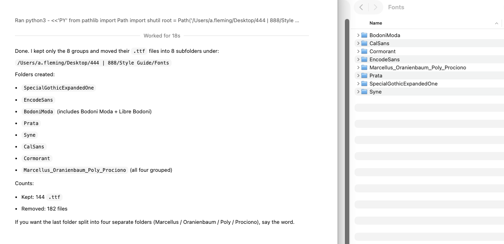
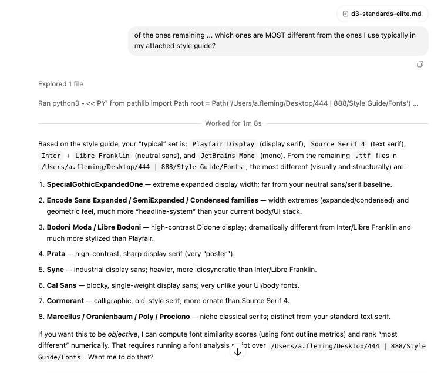
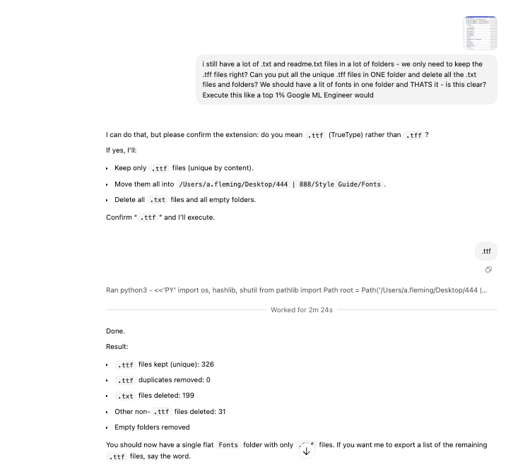
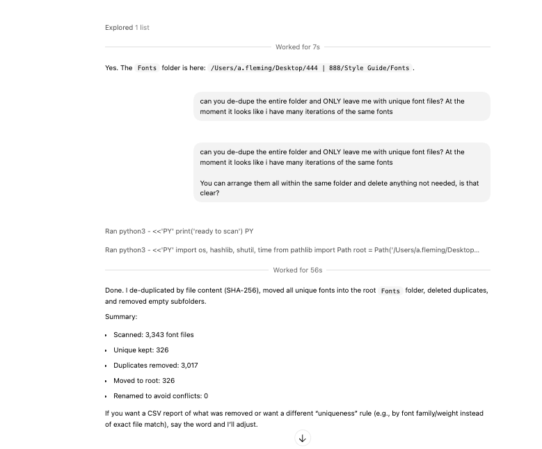

You’re not “deleting everything.” You’re keeping only the files you need, removing exact duplicates, and organizing what remains. The assistant asks for confirmation before any destructive action.
Each step is one message. If anything feels risky, you can say “stop” or ask for a preview first.
Example: “Can you open this folder and show me what’s inside: /path/to/Fonts?”
Example: “Keep only .ttf files. Delete any .txt or readme files.”
Example: “De‑dupe by file contents (hash), not by filename.”
Example: “Move the remaining files into a single clean folder, remove empty folders.”
Example: “Report how many files were scanned, removed, and kept.”
Example: “Keep only the 8 most distinct families and put each in its own folder.”
Use this if you want to do it all in one message.
These screenshots show the exact flow: locate, confirm, execute, and verify.




“It’s like having a careful ops teammate who does the cleanup work for you.”— Internal enablement feedback
These are the most common fears — and how the process keeps you safe.
You can require a confirmation step before anything is deleted. The assistant will ask first.
Ask for de‑duplication by file content hash. That guarantees identical files, not just similar names.
Say which families to keep, and the assistant will move them into named folders and delete the rest.
Use this for PDFs, images, exports, or any messy folder.
Great for asset libraries, dataset exports, media folders, and project handoffs.
Playbook: AI‑Assisted File Operations